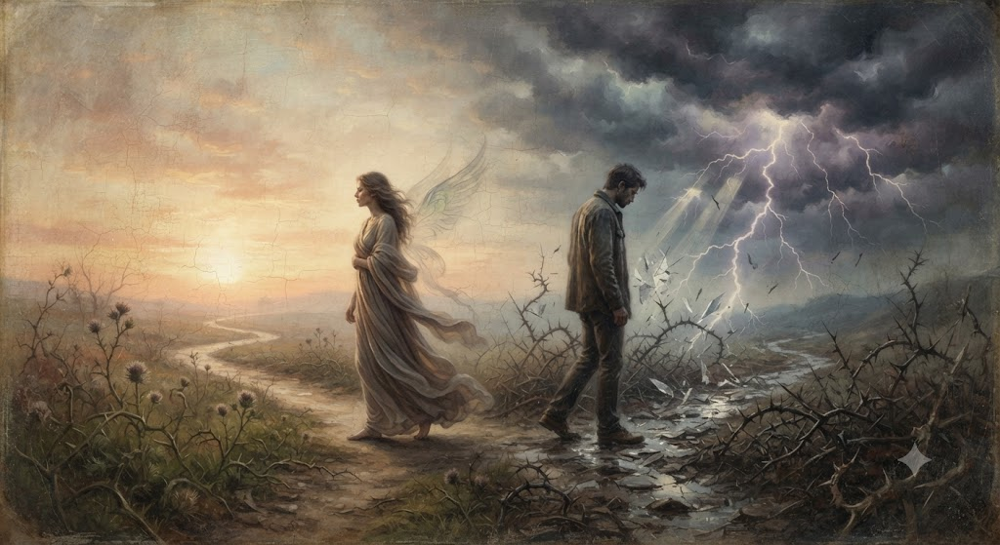

A reflection on a love that felt destined, yet transient; this poem explores the rise and fall of a karmic connection. It speaks to passion, growth, heartbreak, and the quiet understanding that some relationships arrive not to stay, but to transform us before they leave.

The love between us was a karmic encounter,
Perhaps we carried unfinished business
from the depths of our souls.
Destiny brought us beneath the same sun,
our meeting unfolding
like childhood sweethearts
in an old, faded painting.
In the morning of our days,
the bells of romance rang.
As our spirits climbed toward high noon,
who could have imagined
that such radiant light
would fracture into shadow?
This fleeting bond was born
only to fall apart.
Deep down you knew
I would one day
spread my wings
and never return.
Our love was fated;
it carried a quiet expiration
woven into the very start.
Life had gifted you
the rare chance to heal,
to slough off your old pain
and rise into your highest self.
Yet you chose the thistle path
scattering chaos everywhere,
wounding us both,
until, in the end,
the only soul you truly destroyed
was your own.
This fatal love gave us a lesson,
and a flint of memory we shared.
We have approached its final end,
and now, the chapter is finally closed.